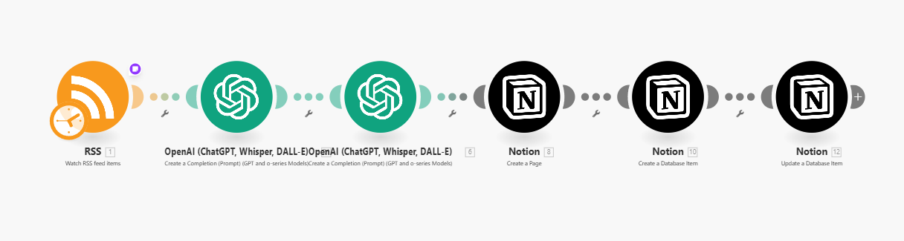
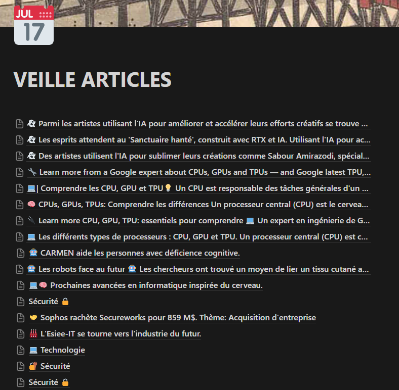
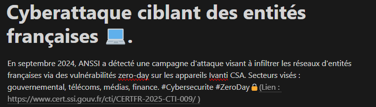

Veille technologique
Contexte
Afin de me maitnenir informé des actualités, j'ai décidé d'automatiser une veille technologique via Make (NoCode).
Cette dernière me permet de résumer et stocker des articles sur des thèmes choisis grâce à l'intelligence artificielle.
Script
-

Ce script récupère les flux RSS, les résume et les stocke dans une base de données.
Résultat
-

Mon travail se résume donc à lire les résumés. S'ils m'intéressent, un lien est disponible directement pour me rendre sur l'article en question
